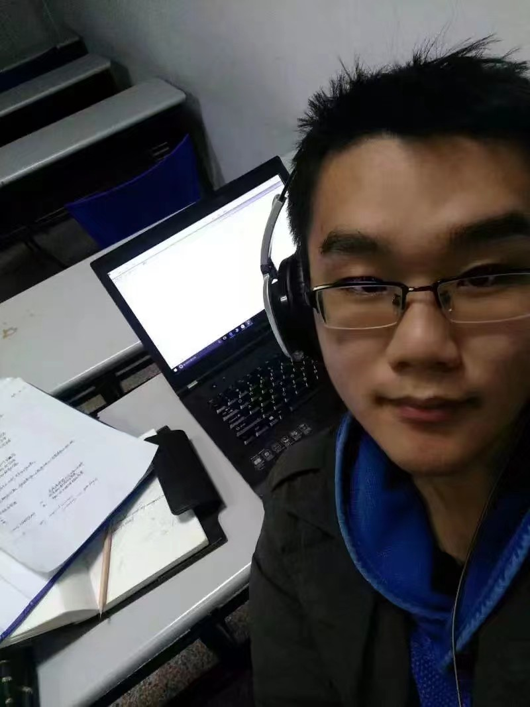
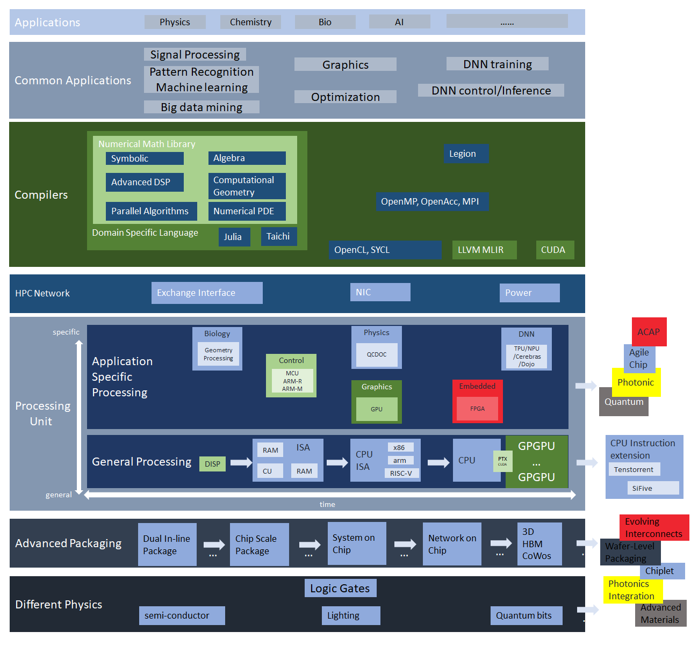

Lingzhi Yang
Applied Mathematics and StatisticsStony Brook University
Email: lingzhi.yang@stonybrook.edu
[Linkedin]

I am a Computational Applied Math PhD student @ Stony Brook University
I am currently interested in efficient processing of numerical PDE on heterogeneous architectures. I am member of Prof. Barbara Chapman's [Exascallab], and I am working on a Xilinx HLS project with [COMPAS] lab.
